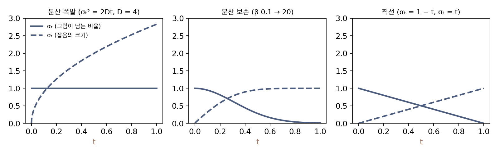
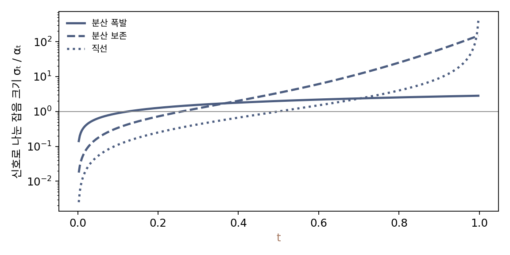

잡음 일정: 언제 얼마나 섞을까
지금까지는 분산이 시간에 비례해 쌓이는 σt² = 2Dt 하나만 썼다. 생성은 t = 1의 분포에서 출발하므로, 그 분포가 데이터와 상관없이 우리가 아는 가우시안이 되려면 σ₁이 데이터 점들 사이의 거리보다 넉넉히 커야 한다. 실제 그림에서는 이 값이 매우 크다. 픽셀 값이 0~1인 가로세로 32픽셀 그림에서 가장 큰 잡음으로 표준편차 50을 권한 연구도 있다. 그러면 잡음 섞인 그림의 숫자들은 ±100을 넘나들고, 같은 신경망이 잡음이 옅을 때는 ±1 근처의 입력을, 짙을 때는 그 백 배 크기의 입력을 받아야 한다. 잡음을 섞는 시간표를 달리 정할 수는 없을까?
역사: 폭발하는 분산에서 지키는 분산, 그리고 곧은 길로
2019년 송(Yang Song)과 에르몬(Stefano Ermon)은 픽셀 값을 0~1로 두고, 잡음의 표준편차를 1에서 0.01까지 등비로 줄어드는 열 단계로 나눠 각 단계의 잡음 섞인 그림을 다루는 모델을 내놓았다. 단계가 띄엄띄엄했고 가장 큰 잡음 1은 그림들 사이 거리에 비해 작았다. 이듬해 두 사람이 가장 큰 잡음을 데이터 두 점 사이 거리만큼 키우라고 권하면서, 잡음은 앞에서 본 50까지 커졌다.
같은 2020년 호와 자인(Ajay Jain), 아빌(Pieter Abbeel)은 다른 길을 택했다. 픽셀을 −1~1로 두고, 걸음마다 그림을 조금씩 줄이면서 그만큼 잡음을 섞어 전체 크기가 커지지 않게 했다. 걸음은 1000번, 걸음마다 섞는 잡음의 분산 βt(베타)는 10⁻⁴에서 0.02까지 곧게 늘렸다. 논문은 이 값들을 「마지막 걸음의 신호 대 잡음비를 될 수 있는 한 작게」 유지하도록 골랐다고 적었다.
이듬해 송과 동료들은 두 방법을 하나의 미분방정식 틀로 묶으면서 이름을 붙였다. 앞의 것은 분산이 끝없이 커지므로 분산 폭발형(variance exploding), 뒤의 것은 데이터의 분산이 1이면 내내 1로 머무르므로 분산 보존형(variance preserving)이다. 2022년 류싱차오(Xingchao Liu), 궁청웨(Chengyue Gong), 류창(Qiang Liu)은 또 다른 길을 냈다. 데이터 점과 잡음 점을 잇는 곧은 선분을 길로 쓰는 것이다. 논문은 곧은 길이 「두 점 사이의 가장 짧은 길이고, 시간을 잘게 나누지 않고도 정확히 따라갈 수 있다」고 적었다. 2024년 Stable Diffusion 3을 낸 에서(Patrick Esser)와 동료들은 이 곧은 길, 곧 xt = (1 − t)x₀ + tε로 잡음을 섞었다.
세 일정을 한 식으로
세 방법은 모두 다음 한 식으로 적힌다.
αt(알파)와 σt를 시간에 따라 어떻게 정하느냐가 일정이다.
| 일정 | αt | σt | t = 0.1에서 (αt, σt) | t = 0.75에서 (αt, σt) |
|---|---|---|---|---|
| 분산 폭발 (이 책의 기본) | 1 | √(2Dt), D = 4 | (1, 0.894) | (1, 2.449) |
| 분산 보존 | 줄어든다 | √(1 − αt²) | (0.947, 0.322) | (0.059, 0.998) |
| 직선 | 1 − t | t | (0.9, 0.1) | (0.25, 0.75) |
분산 보존 칸의 값은 βt를 0.1에서 20으로 곧게 늘린 연속 일정(송과 동료들이 1000걸음 일정에 맞춰 쓴 값)에서 계산했다. 이렇게 시간마다 그림을 얼마나 남기고 잡음을 얼마나 섞을지 정한 시간표를 잡음 일정 (언제 얼마나 섞을지 정한 시간표 / noise schedule)이라 한다.

표를 보면 같은 t라도 세 일정이 전혀 다른 그림을 만든다. 그러면 일정마다 신경망과 생성 방법을 따로 생각해야 할까? 식의 양변을 αt로 나눠 보자.
오른쪽은 분산 폭발 일정의 꼴 그대로다. 예를 들어 분산 보존 일정에서 αt = 0.6, σt = 0.8인 그림을 0.6으로 나누면 x₀ + 1.333ε, 곧 분산 폭발 일정에서 잡음 크기가 1.333인 그림이 된다. 일정을 바꾸면 달라지는 것은 두 가지뿐이다. 그림 전체를 얼마나 줄여 두느냐(αt)와, 시간에 따라 σt/αt가 어떤 빠르기로 커지느냐다. 이 책은 σt/αt를 「신호로 나눈 잡음 크기」라 부른다. 문헌에서 흔히 쓰는 신호 대 잡음비(SNR) αt²/σt²와는 위아래를 뒤집고 제곱근을 씌운 관계, 곧 σt/αt = 1/√SNR이다. 위 역사에서 DDPM 논문이 신호 대 잡음비를 될 수 있는 한 작게 했다는 것은 신호로 나눈 잡음 크기를 될 수 있는 한 크게 했다는 뜻이다. 잡음 섞인 그림에서 원래 그림을 얼마나 알아볼 수 있는지는 이 값 하나가 정한다. 그래서 이 책은 분산 폭발 일정을 기본으로 이야기하고, 다른 일정은 크기를 바꾸고 시간 눈금을 바꾼 것으로 읽는다.

ML에서: 모델마다 다른 일정을 한 눈금으로
그림 생성 도구 ComfyUI의 코드는 이 성질을 그대로 쓴다. 분산 보존 일정으로 학습한 Stable Diffusion 1.x 같은 모델도 일정을 시그마 하나로 바꿔 적는다. 1000걸음 일정의 각 걸음에서 σ = √(1 − αt²)/αt, 곧 신호로 나눈 잡음 크기를 계산해 두고(DDPM 논문과 코드는 αt²를 ᾱt(알파 바) 한 글자로 적는다), 잡음은 언제나 「그림 + σ × 잡음」으로 섞으며, 신경망에 넣을 때만 √(σ² + 1)로 나눠 분산 보존의 크기로 되돌린다(comfy/model_sampling.py). ComfyUI의 기본 설정으로 계산한 Stable Diffusion 1.x 의 신호로 나눈 잡음 크기는 0.0292에서 14.61까지다. 직선 일정으로 학습한 FLUX 같은 모델은 「σ × 잡음 + (1 − σ) × 그림」의 꼴을 그대로 둔다. 겉모습이 다른 일정들을 시그마 하나의 눈금으로 맞춰 두면, 잡음을 걷어 가는 걸음을 어떻게 디딜지 정하는 부분을 여러 모델이 함께 쓸 수 있다.
문제 10. 두 카페의 커피
카페 A는 커피 원액 100 mL에 물 300 mL를 부어 400 mL를 판다. 카페 B는 컵이 200 mL로 정해져 있다. (가) B가 A와 같은 진하기로 내려면 원액과 물을 몇 mL씩 넣어야 하는가? (나) A가 물을 더 부어 원액 100 mL에 물 700 mL가 되었다면, B의 컵에는 원액과 물을 몇 mL씩 넣어야 같은 진하기인가?

B는 컵이 작아서 원액 100 mL를 다 넣으면 물을 100 mL밖에 못 넣어요. A만큼 묽게는 못 만들겠는데요.

원액을 꼭 100 mL 넣어야 하나요? 진하기를 정하는 건 무엇이죠?

아, 원액과 물의 비율이요. A는 물이 원액의 세 배니까 B는 원액 50 mL에 물 150 mL면 돼요.

(나)는 물이 원액의 일곱 배니까 200 mL를 1 : 7로 나눠서 원액 25 mL, 물 175 mL. A는 물을 부을수록 잔이 커지고, B는 컵 크기를 지키는 대신 원액을 덜어 내는 거네.

두 카페는 잡음 일정의 어느 쪽과 닮았어요?

A는 그림을 그대로 두고 잡음만 붓는 분산 폭발, B는 전체 크기를 지키며 그림을 덜어 내는 분산 보존이에요. 맛을 정하는 게 비율이듯, 그림을 얼마나 알아볼 수 있는지는 신호로 나눈 잡음 크기가 정하고요. 다만 커피는 양이 그대로 더해지고 잡음은 분산이 더해지니까, 컵 크기를 지키는 조건이 αt + σt = 1이 아니라 αt² + σt² = 1이라는 점이 달라요.

레시피를 「몇 mL」가 아니라 「몇 대 몇」으로 적어 두면 어느 컵에서든 같은 맛이 나는 거네요.
문제 11. 신호로 나눈 잡음 크기가 같으면
(가) 분산 보존 일정(αt² + σt² = 1)에서 신호로 나눈 잡음 크기 σt/αt가 2인 때의 αt와 σt는? (나) 직선 일정(αt = 1 − t, σt = t)에서 이 값이 2인 t는? (다) 데이터가 N(0, 1)이면 직선 일정의 xt는 분산이 t에 따라 어떻게 바뀌는가? 가장 작을 때는 언제이고 얼마인가? (풀어 본 뒤 위젯 2의 「문제 11 불러오기」로 확인해 보자.)
(가)는 σt = 2αt를 αt² + σt² = 1에 넣으면 5αt² = 1, αt = 1/√5 = 0.447, σt = 0.894예요.
(나)는 t/(1 − t) = 2라서 t = 2/3이요. (다)는 직선 일정도 αt + σt = 1이라 섞는 양이 늘 1이니까, 분산 보존처럼 분산이 늘 1이겠죠.
그림 x₀와 잡음 ε가 서로 상관없을 때, αtx₀ + σtε의 분산은 무엇이었죠?

분산이 더해지니까 αt² + σt²… 아, αt + σt가 아니라 제곱의 합이네요. 그럼 (1 − t)² + t²이에요.

양 끝 t = 0과 1에서는 1인데 한가운데 t = 0.5에서 0.25 + 0.25 = 0.5로 가장 작아. 표준편차로는 0.707이야. 직선 일정은 길 중간에서 그림이 쪼그라들었다가 다시 커지는 거네.

그래요. 분산을 지키는 건 분산 보존 일정만의 성질이에요. 직선 일정은 길이 곧은 대신 크기가 가운데서 줄어요.
피타고라스 정리에서 빗변이 두 변의 합이 아니라 제곱합의 제곱근이던 거랑 같아요. 서로 직각인 두 벡터를 더하는 거니까요.
문제 12. DDPM의 1000걸음
호와 동료들의 DDPM은 픽셀을 −1~1로 두고, 걸음마다 섞는 잡음의 분산 βt를 10⁻⁴에서 0.02까지 1000걸음에 곧게 늘린다(이때 t는 걸음 번호 1 … 1000이다). 걸음 t까지 그림이 남는 비율 αt는 αt² = (1 − β₁)(1 − β₂)⋯(1 − βt)로 정해지고 잡음은 σt = √(1 − αt²)이다. (가) 마지막 걸음에서 αt와 신호로 나눈 잡음 크기 σt/αt는? (나) 500걸음에서는? (다) 신호로 나눈 잡음 크기가 1이 되는 것은 몇 걸음째인가?
마지막 걸음의 βt가 0.02밖에 안 되니까 그림이 98%쯤은 남아 있지 않을까요?
0.02는 마지막 한 걸음에서 섞는 양이에요. 그 앞의 999걸음은요?
아, 곱해야 하는구나. 1000개를 곱했더니 αt²가 4.04 × 10⁻⁵, αt = 0.0064예요. 그림이 0.64%만 남아요. 신호로 나눈 잡음 크기는 √(1 − αt²)/αt = 157이고요.
(나) 500걸음에서는 αt² = 0.0786, αt = 0.280, σt = 0.960이라 σt/αt가 3.42야. 걸음 번호로는 절반인데 그림은 28%밖에 안 남았어.
(다)는 언제쯤일 거라고 생각해요?

500걸음에서 이미 3.4니까 그보다 훨씬 앞이겠네요. 계산하니 259걸음째에 1이 돼요. 이때는 αt = σt = 0.707이에요. 1000걸음 가운데 처음 4분의 1 동안 이 값이 0.01에서 1까지 오르고, 나머지 4분의 3 동안 1에서 157까지 올라요.
분산 폭발 일정으로 읽으면, DDPM의 마지막 걸음은 −1~1 그림에 잡음 크기 157을 섞은 것과 같은 수준이에요. 같은 1000걸음이라도 신호로 나눈 잡음 크기가 어떤 빠르기로 커지는지는 일정마다 달라요. 걸음을 어디에 몰아 디딜지는 이 값을 보고 정하게 되고요.
적금 이자가 매달 조금씩이어도 오래 붙으면 크게 불어나는 거랑 같네요. 여기서는 그림이 매번 조금씩 깎여서 거의 0이 된 거고요.